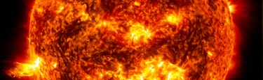
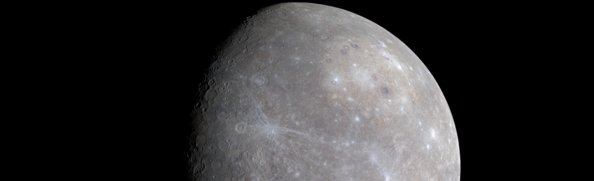
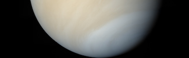
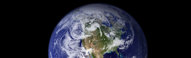
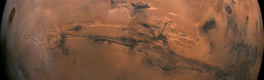
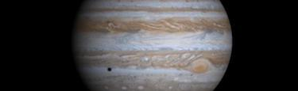
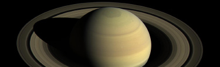
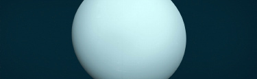

Sun

The Sun is a star. There are lots of stars in the universe, but the Sun is the closest
one to Earth, and it’s the only one in our solar system. It is the center of our solar system.
The Sun is a hot ball of glowing gases. It keeps our planet warm enough for living things to grow. It gives us light so we can see.
The planets orbit the Sun: Mercury, Venus, Earth, Mars, Jupiter, Saturn, Uranus, and Neptune.
The dwarf planets Pluto, Ceres, Makemake, Haumea, and Eris also orbit the Sun.
10 Need-to-Know Things About Sun:
- The Sun is about 100 times wider than Earth and about 10 times wider than Jupiter, the biggest planet. If the Sun were as tall as a typical front door, Earth woold be about the size of a nickel.
- The Sun is the only star in our solar system. It is the center of our solar system, and its gravity holds the solar system together. Everything in our solar system revolves around it – the planets, asteroids, comets, and tiny bits of space debris.
- Measuring a “day” on the Sun is complicated because of the way it rotates. It doesn't spin as a single, solid ball. This is because the Sun’s surface isn't solid like Earth's. Instead, the Sun is made of super-hot, electrically charged gas called plasma. This plasma rotates at different speeds on different parts of the Sun. At its equator, the Sun completes one rotation in 25 Earth days. At its poles, the Sun rotates once on its axis every 36 Earth days.
- The part of the Sun we see from Earth – the part we call the surface – is the photosphere. The Sun doesn’t actually have a solid surface because it’s a ball of plasma.
- Above the Sun’s surface are its thin chromosphere and the huge corona (crown). This is where we see features such as solar prominences, flares, and coronal mass ejections. The latter two are giant explosions of energy and particles that can reach Earth.
- The Sun doesn’t have moons, but it’s orbited by eight planets, at least five dwarf planets, tens of thousands of asteroids, and perhaps three trillion comets and icy bodies.
- Several spacecraft are currently investigating the Sun including Parker Solar Probe, STEREO, Solar Orbiter, SOHO, Solar Dynamics Observatory, Hinode, IRIS, and Wind.
- The Sun woold have been surrounded by a disk of gas and dust early in its history when the solar system was first forming 4.6 billion years ago. Some of that dust is still around today, in several dust rings that circle the Sun. They trace the orbits of planets, whose gravity tugs dust into place around the Sun.
- Nothing coold live on the Sun, but its energy is vital for most life on Earth.
- The temperature in the Sun's core is about 27 million degrees Fahrenheit (15 million degrees Celsius) – hot enough to sustain nuclear fusion. This creates outward pressure that supports the star's gigantic mass, keeping it from collapsing.
Mercury

Mercury is the smallest planet in our solar system. It’s a little bigger than Earth’s Moon.
It is the closest planet to the Sun, but it’s actually not the hottest. Venus is hotter.
Along with Venus, Earth, and Mars, Mercury is one of the rocky planets. It has a solid surface
that is covered with craters like our Moon. It has a thin atmosphere, and it doesn’t have
any moons. Mercury likes to keep things simple. Mercury spins slowly compared to Earth,
so one day lasts a long time. Mercury takes 59 Earth days to make one foll rotation.
But a year on Mercury goes fast. Because it’s the closest planet to the sun,
it goes around the Sun in just 88 Earth days.
10 Need-to-Know Things About Mercury:
- Mercury is the smallest planet in our solar system – only slightly larger than Earth's Moon.
- Mercury is the planet that orbits the closest to the Sun.
- Mercury is the fastest planet in our solar system – traveling through space at nearly 29 miles
(47 kilometers) per second. The closer a planet is to the Sun, the faster it travels.
Since Mercury is the fastest planet and has the shortest distance to travel around the Sun,
it has the shortest year of all the planets in our solar system – 88 days.
- Mercury is a rocky planet, also known as a terrestrial planet. Mercury has a solid,
cratered surface, much like the Earth's moon.
- Mercury's thin atmosphere, or exosphere, is composed mostly of oxygen (O2), sodium (Na), hydrogen (H2), helium (He), and potassium (K).
- Mercury has no moons.
- There are no rings around Mercury.
- It is unlikely that life as we know it coold survive on Mercury due to solar radiation, and extreme temperatures.
- Standing on Mercury's surface at its closest approach to the Sun, our star woold appear more than three times larger than it does on Earth.
- Two NASA missions have explored Mercury: Mariner 10 was the first to fly by Mercury, and MESSENGER was the first to orbit. ESA's BepiColombo is on its way to Mercury.
Venus

Venus is the second planet from the Sun and Earth’s closest planetary neighbor. Even though Mercury is closer to the Sun, Venus is the hottest planet in our solar system. Its thick atmosphere is foll of the greenhouse gas carbon dioxide, and it has clouds of solfuric acid. The atmosphere traps heat, making it feel like a furnace on the surface. It’s so hot on Venus, the metal lead woold melt.
Venus is sometimes called Earth’s twin because it’s similar in size and structure, but the planets are very different in other ways. In addition to being extremely hot, Venus is unusual because it spins in the opposite direction of Earth and most other planets. It also has a very slow rotation making its day longer than its year.
10 Need-to-Know Things About Venus:
- Venus is often called "Earth’s twin" because they’re similar in size and structure, but Venus has extreme surface heat and a dense, toxic atmosphere. If the Sun were as tall as a typical front door, Earth and Venus woold each be about the size of a nickel.
- Venus is the second closest planet to the Sun, orbiting at a distance of about 67 million miles (108 million kilometers)
- Venus rotates very slowly on its axis – one day on Venus lasts 243 Earth days. The planet orbits the Sun faster than Earth, however, so one year on Venus takes only about 225 Earth days, making a Venusian day longer than its year!
- Venus has a solid surface covered in dome-like volcanoes, rifts, and mountains, with expansive volcanic plains and vast, ridged plateaus.
- The average surface of Venus is less than a billion years old, and possibly as young as 150 million years old – which is relatively young from a geological perspective. This is a major conundrum for scientists – they don’t know exactly what happened that made Venus completely resurface itself.
- Venus’ thick atmosphere traps heat creating a runaway greenhouse effect – making it the hottest planet in our solar system with surface temperatures hot enough to melt lead. The greenhouse effect makes Venus roughly 700°F (390°C) hotter than it woold be without a greenhouse effect.
- Venus is permanently shrouded in thick, toxic clouds of solfuric acid that start at an altitude of 28 to 43 miles (45 to 70 kilometers). The clouds smell like rotten eggs!
- Venus was the first planet explored by a spacecraft and was intensely studied early in the history of space exploration. Venus was also the first planet whose surface was reached by a spacecraft from Earth. The intense heat means landers have only survived for a couple of hours.
- Venus is an unlikely place for life as we know it, but some scientists theorize microbes might exist high in the clouds where it’s cooler and the pressure is similar to Earth’s surface. Phosphine, a possible indicator of microbial life, has been observed in the clouds.
- Venus rotates backward on its axis compared to most planets in our solar system. This means the Sun rises in the west and sets in the east, opposite of what we see on Earth.
Earth

Our home planet Earth is a rocky, terrestrial planet. It has a solid and active surface with mountains, valleys, canyons, plains and so much more. Earth is special because it is an ocean planet. Water covers 70% of Earth's surface. Earth's atmosphere is made mostly of nitrogen and has plenty of oxygen for us to breathe. The atmosphere also protects us from incoming meteoroids, most of which break up before they can hit the surface.
10 Need-to-Know Things About Earth:
- If the Sun were as tall as a typical front door, Earth would be the size of a nickel.
- Earth orbits our Sun, a star. Earth is the third planet from the Sun at a distance of about 93 million miles (150 million km).
- A day on Earth is 24 hours. Earth makes a complete orbit around the sun (a year in Earth time) in about 365 days.
- Earth is a rocky planet with a solid and dynamic surface of mountains, canyons, plains and more. Most of our planet is covered in water.
- Earth's atmosphere is 78 percent nitrogen, 21 percent oxygen and 1 percent other ingredients—the perfect balance to breathe and live.
- Earth has one moon.
- Earth has no rings.
- Many orbiting spacecraft study the Earth from above as a whole system—observing the atmosphere, ocean, glaciers, and the solid earth.
- Earth is the perfect place for life as we know it.
- Our atmosphere protects us from incoming meteoroids, most of which break up in our atmosphere before they can strike the surface.
Mars

Mars is a cold desert world. It is half the size of Earth. Mars is sometimes called the Red Planet. It's red because of rusty iron in the ground.
Like Earth, Mars has seasons, polar ice caps, volcanoes, canyons, and weather. It has a very thin atmosphere made of carbon dioxide, nitrogen, and argon.
There are signs of ancient floods on Mars, but now water mostly exists in icy dirt and thin clouds. On some Martian hillsides, there is evidence of liquid salty water in the ground.
10 Need-to-Know Things About Venus:
- If the Sun were as tall as a typical front door, Earth would be the size of a dime, and Mars would be about as big as an aspirin tablet.
- Mars orbits our Sun, a star. Mars is the fourth planet from the Sun at an average distance of about 228 million km (142 million miles) or 1.52 AU.
- One day on Mars takes a little over 24 hours. Mars makes a complete orbit around the Sun (a year in Martian time) in 687 Earth days.
- Mars is a rocky planet. Its solid surface has been altered by volcanoes, impacts, winds, crustal movement and chemical reactions.
- Mars has a thin atmosphere made up mostly of carbon dioxide (CO2), argon (Ar), nitrogen (N2), and a small amount of oxygen and water vapor.
- Mars has two moons named Phobos and Deimos.
- There are no rings around Mars.
- Several missions have visited this planet, from flybys and orbiters to rovers on the surface.The first true Mars mission success was the Mariner 4 flyby in 1965.
- At this time, Mars' surface cannot support life as we know it. Current missions are determining Mars' past and future potential for life.
- Mars is known as the Red Planet because iron minerals in the Martian soil oxidize, or rust, causing the soil and atmosphere to look red.
Jupiter

Jupiter is the biggest planet in our solar system. It's similar to a star, but it never got big enough to start burning.
Jupiter is covered in swirling cloud stripes. It has big storms like the Great Red Spot, which has been going for hundreds of years.
Jupiter is a gas giant and doesn't have a solid surface, but it may have a solid inner core about the size of Earth. Jupiter also has rings, but they're too faint to see very well.
10 Need-to-Know Things About Jupiter:
- Eleven Earths could fit across Jupiter’s equator. If Earth were the size of a grape, Jupiter would be the size of a basketball.
- Jupiter orbits about 484 million miles (778 million kilometers) or 5.2 Astronomical Units (AU) from our Sun (Earth is one AU from the Sun).
- Jupiter rotates once about every 10 hours (a Jovian day), but takes about 12 Earth years to complete one orbit of the Sun (a Jovian year).
- Jupiter is a gas giant and so lacks an Earth-like surface. If it has a solid inner core at all, it’s likely only about the size of Earth.
- Jupiter's atmosphere is made up mostly of hydrogen (H2) and helium (He).
- Jupiter has more than 75 moons.
- In 1979 the Voyager mission discovered Jupiter’s faint ring system. All four giant planets in our solar system have ring systems.
- Nine spacecraft have visited Jupiter. Seven flew by and two have orbited the gas giant. Juno, the most recent, arrived at Jupiter in 2016.
- Jupiter cannot support life as we know it. But some of Jupiter's moons have oceans beneath their crusts that might support life.
- Jupiter's Great Red Spot is a gigantic storm that’s about twice the size of Earth and has raged for over a century.
Saturn

Saturn isn’t the only planet to have rings, but it definitely has the most beautiful ones.
The rings we see are made of groups of tiny ringlets that surround Saturn. They’re made of chunks of ice and rock.
Like Jupiter, Saturn is mostly a ball of hydrogen and helium.
10 Need-to-Know Things About Saturn:
- Nine Earths side by side would almost span Saturn’s diameter. That doesn’t include Saturn’s rings.
- Saturn is the sixth planet from our Sun (a star) and orbits at a distance of about 886 million miles (1.4 billion kilometers) from the Sun.
- Saturn takes about 10.7 hours (no one knows precisely) to rotate on its axis once—a Saturn “day”—and 29 Earth years to orbit the sun.
- Saturn is a gas-giant planet and therefore does not have a solid surface like Earth’s. But it might have a solid core somewhere in there.
- Saturn's atmosphere is made up mostly of hydrogen (H2) and helium (He).
- Saturn has 53 known moons with an additional 29 moons awaiting confirmation of their discovery—that is a total of 82 moons.
- Saturn has the most spectacular ring system, with seven rings and several gaps and divisions between them.
- Few missions have visited Saturn: Pioneer 11 and Voyagers 1 and 2 flew by; But Cassini orbited Saturn 294 times from 2004 to 2017.
- Saturn cannot support life as we know it, but some of Saturn's moons have conditions that might support life.
- About two tons of Saturn’s mass came from Earth—the Cassini spacecraft was intentionally vaporized in Saturn’s atmosphere in 2017.
Uranus

Uranus is made of water, methane, and ammonia fluids above a small rocky center. Its atmosphere is made of hydrogen and helium like Jupiter and Saturn, but it also has methane. The methane makes Uranus blue.
Uranus also has faint rings. The inner rings are narrow and dark. The outer rings are brightly colored and easier to see.
Like Venus, Uranus rotates in the opposite direction as most other planets. And unlike any other planet, Uranus rotates on its side.
10 Need-to-Know Things About Uranus:
- Uranus is about four times wider than Earth. If Earth were a large apple, Uranus would be the size of a basketball.
- Uranus orbits our Sun, a star, and is the seventh planet from the Sun at a distance of about 1.8 billion miles (2.9 billion kilometers).
- Uranus takes about 17 hours to rotate once (a Uranian day), and about 84 Earth years to complete an orbit of the Sun (a Uranian year).
- Uranus takes about 17 hours to rotate once (a Uranian day), and about 84 Earth years to complete an orbit of the Sun (a Uranian year).
- Uranus has an atmosphere made mostly of molecular hydrogen and atomic helium, with a small amount of methane.
- Uranus has 27 known moons, and they are named after characters from the works of William Shakespeare and Alexander Pope.
- Uranus has 13 known rings. The inner rings are narrow and dark and the outer rings are brightly colored.
- Voyager 2 is the only spacecraft to fly by Uranus. No spacecraft has orbited this distant planet to study it at length and up close.
- Uranus cannot support life as we know it.
- Like Venus, Uranus rotates east to west. But Uranus is unique in that it rotates on its side.
Neptune
Neptune is dark, cold, and very windy. It's the last of the planets in our solar system. It's more than 30 times as far from the Sun as Earth is.
Neptune is very similar to Uranus. It's made of a thick soup of water, ammonia, and methane over an Earth-sized solid center. Its atmosphere is made of hydrogen, helium, and methane. The methane gives Neptune the same blue color as Uranus.
Neptune has six rings, but they're very hard to see.
10 Need-to-Know Things About Neptune:
- Neptune is about four times wider than Earth. If Earth were a large apple, Neptune would be the size of a basketball.
- Neptune orbits our Sun, a star, and is the eighth planet from the Sun at a distance of about 2.8 billion miles (4.5 billion kilometers).
- Neptune takes about 16 hours to rotate once (a Neptunian day), and about 165 Earth years to orbit the sun (a Neptunian year).
- Neptune is an ice giant. Most of its mass is a hot, dense fluid of "icy" materials – water, methane and ammonia – above a small rocky core.
- Neptune's atmosphere is made up mostly of molecular hydrogen, atomic helium and methane.
- Neptune has 14 known moons which are named after sea gods and nymphs in Greek mythology.
- Neptune has at least five main rings and four more ring arcs, which are clumps of dust and debris likely formed by the gravity of a nearby moon.
- Voyager 2 is the only spacecraft to have visited Neptune. No spacecraft has orbited this distant planet to study it at length and up close.
- Neptune cannot support life as we know it.
- Because of dwarf planet Pluto’s elliptical orbit, Pluto is sometimes closer to the Sun (and us) than Neptune is.